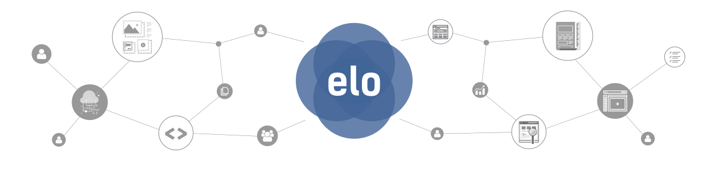

Com o objetivo de comunicar a mesma mensagem por meio de diversas soluções, com
várias tecnologias, de forma clara e consistente, nasce o **Elo Design System**, um
padrão de comunicação para ajudar os desenvolvedores Benner nas soluções elaboradas.
## O que é Design System
Uma série de referências de estilos, componentes e padrões de aplicação, para que
desenvolvedores possam focar mais nas **tecnologias** aplicadas em nossas soluções.
O **Elo Design System** funcionará como um portal de referências para os padrões de
design e melhores práticas, garantindo a comunicação da identidade Benner por
meio das interfaces disponíveis para os usuários. Algumas vantagens de utilizar
o *Design System*:
- Agilizar o processo de desenvolvimento mediante referência concreta.
- Padronizar interfaces nas soluções Benner.
- Aumentar a consistência de interações dentre as soluções.
- Diminuir a probabilidade de erros ou problemas de usabilidade.
- Aumentar a integração entre as equipes de desenvolvimento, design e envolvidos no projeto.
- Permitir a escalabilidade de interfaces desenvolvidas.
- Garantir constante atualização e evolução dos conteúdos disponíveis.
## Comece a usar agora
Veja como você pode aplicar o *Design System* com o seu time.